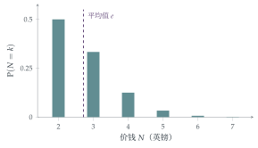

STEP I 1996，第 13 题
继续之前，请先阅读题目（原题为英文）。题目载于 STEP Support Programme 的题目资料库： step.maths.org/questions/96-s1-q13
引子
有这样一种古怪的卖邮票方法：买家不断猜邮票藏在哪一个杯子下面，每一轮多加一个杯子；到他第一次猜错时，桌上有多少个杯子，他就要付多少英镑。平均而言，他要付 \(\pounds e\)，约为 \(\pounds 2.72\)。
\(e\) 这个数在概率（probability）中出现之频繁，简直不可思议：没有人拿回自己衬衫的机会（第 9.8 节）、秘书问题（secretary problem，第 12.12 节）、泊松分布（Poisson distribution）。本题也许是它众多现身之中最简单的一次，而且原来它与另一道著名谜题有着完全相同的分布（distribution）：要把多少个介乎 \(0\) 与 \(1\) 之间的随机数相加，总和才会超过 \(1\)？平均而言，是 \(e\) 个。
动笔之前
若 \(N = 4\)，必须发生甚么事？概率是多少？
Jim 必须在有 \(2\) 个杯子时猜中（概率为 \(\frac12\)），在有 \(3\) 个杯子时也猜中（\(\frac13\)），然后在有 \(4\) 个杯子时猜错（\(\frac34\)）。所以 \(\mathrm{P}(N = 4) = \frac12\cdot\frac13\cdot\frac34 = \frac{3}{4!} = \frac18\)。
逐步解题
阶段 1 分布
若 \(N = k\)（其中 \(k \geq 2\)），Jim 在有 \(2, 3, \ldots, k - 1\) 个杯子时都猜中，而在有 \(k\) 个杯子时猜错： \[\mathrm{P}(N = k) = \frac12\cdot\frac13\cdots\frac{1}{k - 1}\cdot\frac{k - 1}{k} = \frac{k - 1}{k!}.\] （验算：\(\frac{1}{2!} + \frac{2}{3!} + \frac{3}{4!} + \cdots = \sum_{k \geq 2}\bigl(\frac{1}{(k-1)!} - \frac{1}{k!}\bigr) = 1\)，这是一个裂项和（telescoping sum）。）
阶段 2 期望值
化简 \(k\cdot\frac{k - 1}{k!}\)。你会得到甚么级数（series）？
\[\mathrm{E}(N) = \sum_{k \geq 2}\frac{k(k - 1)}{k!} = \sum_{k \geq 2}\frac{1}{(k - 2)!} = \frac{1}{0!} + \frac{1}{1!} + \cdots = e. \qed\]
阶段 3 方差
求 \(\mathrm{E}(N^2)\)：可写成 \(k^2 = k(k - 1) + k\)，或直接化简 \(\frac{k^2(k-1)}{k!}\)。
\[\mathrm{E}(N^2) = \sum_{k \geq 2}\frac{k^2(k - 1)}{k!} = \sum_{k \geq 2}\frac{k}{(k - 2)!} = \sum_{j \geq 0}\frac{j + 2}{j!} = \sum_{j \geq 1}\frac{1}{(j - 1)!} + 2\sum_{j \geq 0}\frac{1}{j!} = e + 2e = 3e.\] 所以 \(\mathrm{Var}(N) = 3e - e^2 = e(3 - e) \approx 0.766\)。■

回顾
概率的乘积。一连串独立（independent）的成功之后接着一次失败，所得的乘积可化简为 \(\frac{k-1}{k!}\)。
约去阶乘。乘以 \(k\) 或 \(k^2\) 再约简，那些和式就变成了指数级数（exponential series）。
以平移求 \(\mathrm{E}(N^2)\)。以 \(j = k - 2\) 重新编排下标，和式便分拆成两份 \(e\)。
背后的数学
换了装扮的同一个分布
从 \([0, 1]\) 中均匀（uniformly）地随机选取数 \(U_1, U_2, \ldots\)，并设 \(M\) 为令它们的总和超过 \(1\) 所需的个数。首 \(k\) 个数之和小于 \(1\) 的概率，就是区域 \(\{u_1 + \cdots + u_k < 1, u_i \geq 0\}\) 的体积，即 \(\frac{1}{k!}\)（面积为 \(\frac12\) 的三角形、体积为 \(\frac16\) 的四面体，如此类推）。所以 \[\mathrm{P}(M > k) = \frac{1}{k!}, \qquad \mathrm{P}(M = k) = \frac{1}{(k - 1)!} - \frac{1}{k!} = \frac{k - 1}{k!},\] 正正就是 \(N\) 的分布。在两个问题中都有 \(\mathrm{P}(N > k) = \frac{1}{k!}\)：就杯子而言，这是连续猜中 \(k - 1\) 次的概率。利用 \(\mathrm{E}(N) = \sum_{k \geq 0}\mathrm{P}(N > k)\)（第 9.9 节 中的一条公式），一行便得出 \(\mathrm{E}(N) = \sum\frac{1}{k!} = e\)。
为何 \(e\) 不断出现
每当概率中含有 \(\frac{1}{k!}\)，不论它来自 \(k\) 件物件按某个特定次序排列、\(k\) 个概率依次为 \(\frac12, \frac13, \ldots\) 的相继事件，还是单纯形（simplex）的体积，对 \(k\) 求和都会产生指数级数。错排（derangements，第 9.8 节）给出 \(\sum\frac{(-1)^k}{k!} = e^{-1}\)；这里我们则有 \(\sum\frac{1}{k!} = e\)。至于形如 \(\bigl(1 - \frac1n\bigr)^n \to e^{-1}\) 的极限（limit），它们源自大量独立而不大可能发生的事件，正好解释了秘书问题和泊松分布中的 \(e\)。
“总和超过 \(1\)”这个问题提供了一个以实验估计 \(e\) 的方法：产生随机数，数一数需要多少个才超过 \(1\)，重复多次，然后取平均值。它是蒲丰投针（Buffon’s needle，第 12.20 节）的近亲，后者用来估计 \(\pi\)。这类蒙地卡罗（Monte Carlo）方法以赌场命名，利用随机抽样来估计难以直接计算的量；如今它们广泛应用于科学的各个范畴，由粒子物理学到金融，主要用于计算高维积分。
思维技巧
当期望值是一个含有阶乘的和式时，把各项化简，直至出现一个标准级数（指数级数、几何级数、二项级数）。
在大学，生成函数（generating function）把这种做法系统化：概率生成函数（probability generating function）\(\mathrm{E}(t^N)\) 把整个分布包装起来，而它在 \(t = 1\) 处的导数则给出平均值和方差。
延伸练习
生成函数。证明 \(\mathrm{E}(t^N) = 1 + (t - 1)e^t\)，并用它求 \(\mathrm{E}(N)\) 和 \(\mathrm{E}(N(N - 1))\)。
尾部公式。对于取非负整数值的随机变量（random variable），证明 \(\mathrm{E}(N) = \sum_{k \geq 0}\mathrm{P}(N > k)\)，并用它一行求出 \(\mathrm{E}(N)\)。
由一个杯子开始。假如游戏由一个杯子开始（Jim 不可能猜错），分布会有甚么改变？价钱的期望值是多少？
单纯形。证明 \(\{u_1 + u_2 + u_3 < 1, u_i \geq 0\}\) 的体积为 \(\frac16\)，并用归纳法（induction）证明 \(k\) 维的情况为 \(\frac{1}{k!}\)。
延伸阅读
Eli Maor, e: The Story of a Number（Princeton University Press）。\(e\) 的历史，包括它在概率中的各次现身。
Geoffrey Grimmett & Dominic Welsh, Probability: An Introduction（Oxford University Press），关于生成函数。
Paul Nahin, Digital Dice（Princeton University Press）。以蒙地卡罗模拟解决的概率谜题。